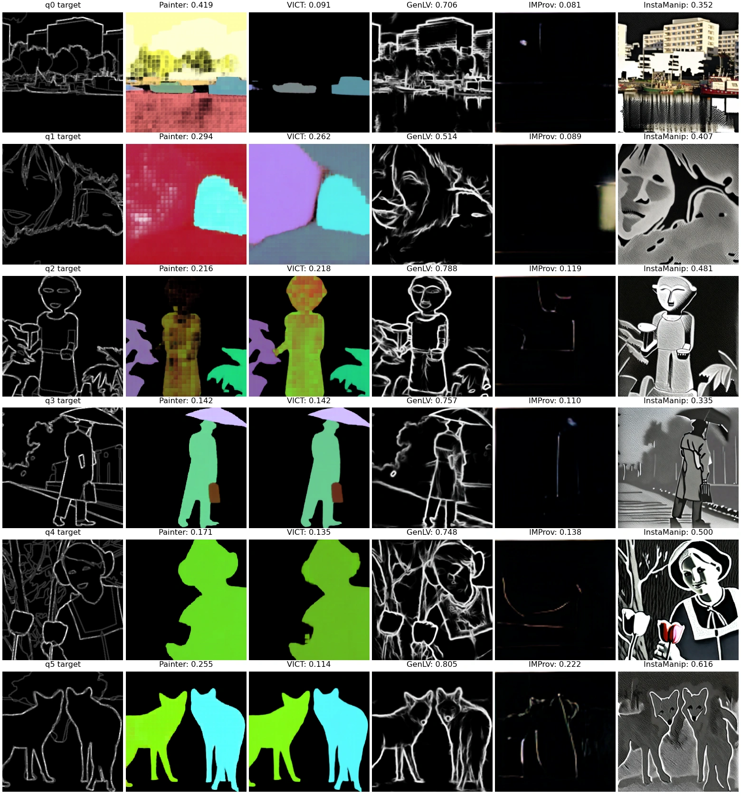
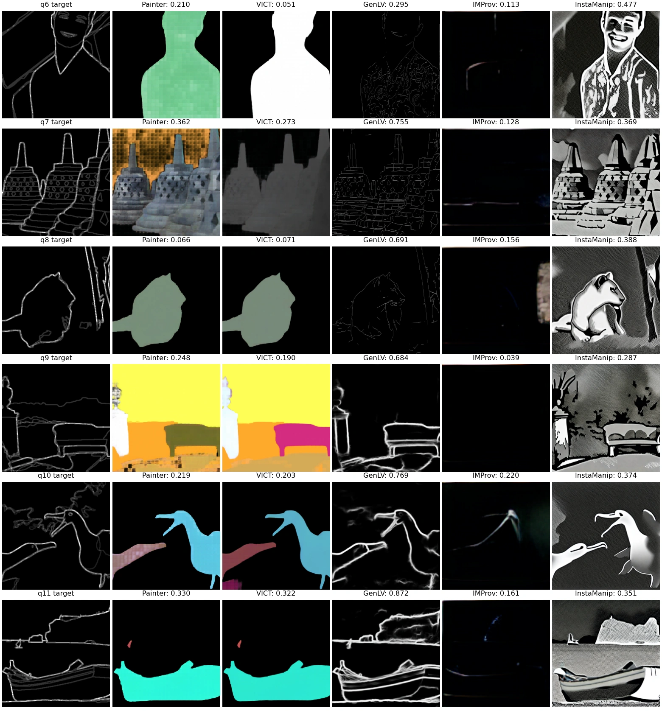
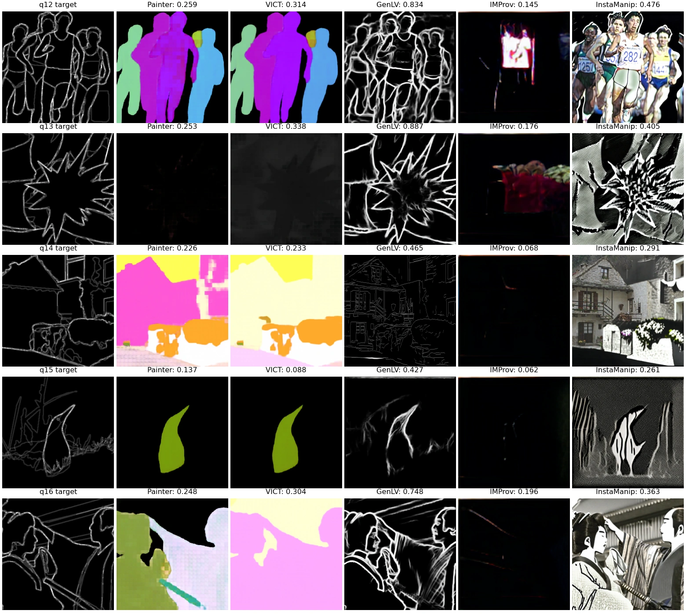

OCTOBER 31 / 85 SAVED PREDICTIONS / FIVE MODELS
Faint edges benefit from contrast adjustment. Filled regions remain a different problem.
IMProv’s fixed square-root brightness setting raises mean per-image edge OIS from 0.130808 to 0.327224, improving all 17 queries. It is now available as one complete, explicitly experimental recipe.
The original metric replays exactly for all 85 images, including every one of the 8,415 threshold-count rows. The experiment retains the released matcher, all native annotators, thinning, 99 thresholds and boundary tolerance. The input confidence changes from brightness to its square root.
Sixteen of IMProv’s 17 original outputs scored best at the lowest threshold, 0.01. Square-root contrast makes the same fixed grid inspect fainter signals: its effective first brightness threshold is 0.0001. This improves sensitivity to weak edges; it does not create missing contours. The setting was chosen on validation and has not been confirmed on an unseen test split.
Brightness reversal does not establish a decoding fix
| Model | Original ↑ | Reversed brightness ↑ | Queries improved |
|---|---|---|---|
| Painter | 0.238493 | 0.274421 | 11/17 |
| VICT | 0.197119 | 0.263118 | 15/17 |
| GenLV | 0.690932 | 0.309805 | 0/17 |
| IMProv | 0.130808 | 0.201301 | 16/17 |
| InstaManip | 0.396074 | 0.374946 | 8/17 |
Reversal results are diagnostic and are not substituted into the table. Painter and VICT mostly emit filled, segmentation-like regions instead of thin contours. Painter’s authenticated demonstration targets are grayscale edge maps for all 17 queries. InstaManip often produces stylized scene images. GenLV generally produces recognizable edges. These observations concern these saved predictions and do not establish the cause inside each model.
Extracting contours from filled regions would add a separate edge-extraction stage. It is not equivalent to correcting polarity and was not tested here. Per-image OIS, pooled OIS and ODS also remain distinct statistics; a larger pooled number is not a model improvement.
Every IMProv query
| Query | Record | Original OIS ↑ | Contrast OIS ↑ |
|---|---|---|---|
| q0 | bsds500:78098 | 0.081238 | 0.355332 |
| q1 | bsds500:14085 | 0.089107 | 0.271682 |
| q2 | bsds500:71076 | 0.119020 | 0.354927 |
| q3 | bsds500:250087 | 0.109872 | 0.338320 |
| q4 | bsds500:258089 | 0.137994 | 0.447432 |
| q5 | bsds500:196062 | 0.221910 | 0.293191 |
| q6 | bsds500:302022 | 0.113376 | 0.251115 |
| q7 | bsds500:217090 | 0.127834 | 0.423258 |
| q8 | bsds500:105027 | 0.155866 | 0.229945 |
| q9 | bsds500:346016 | 0.038593 | 0.229552 |
| q10 | bsds500:103029 | 0.220103 | 0.341349 |
| q11 | bsds500:384022 | 0.161247 | 0.316889 |
| q12 | bsds500:226043 | 0.145473 | 0.387619 |
| q13 | bsds500:51084 | 0.176135 | 0.307240 |
| q14 | bsds500:207038 | 0.067839 | 0.344247 |
| q15 | bsds500:43033 | 0.062209 | 0.322467 |
| q16 | bsds500:145059 | 0.195919 | 0.348236 |
Before/after scores ↓ · Full metrics, threshold counts and provenance ↓ · Fixed contrast formula ↓
Inspect all 85 original outputs
These images illustrate the original predictions. The target column is the rendered edge target; scoring uses all frozen BSDS annotators.


